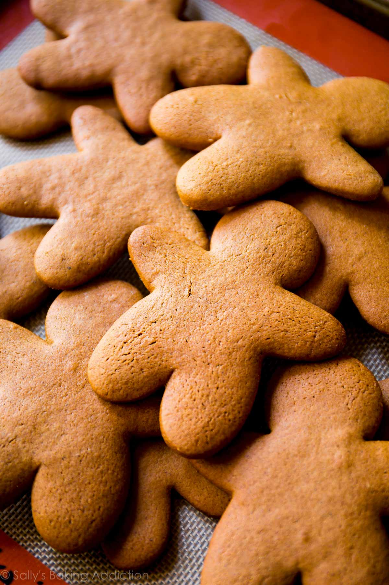

"Whenever I think of Christmas cookies, gingerbread cookies come to mind first. Well, after
Christmas sugar cookies of course! Their spice, their molasses flavor, their SMILES, and their
charm are obviously irresistible. Gingerbread cookies, you have my heart."

Ingredients
10 Tablespoons (2/3 cup; 145g) unsalted butter, softened to room temperature
3/4 cup (150g) packed light or dark brown sugar
2/3 cup (160ml) unsulphured molasses
1 large egg, at room temperature
1 teaspoon pure vanilla extract
3 and 1/2 cups (438g) all-purpose flour (spoon & leveled)
1 teaspoon baking soda
1/2 teaspoon salt
1 Tablespoon ground ginger (yes, 1 full Tablespoon!)
1 Tablespoon ground cinnamon
1/2 teaspoon ground allspice
1/2 teaspoon ground cloves
optional: easy cookie icing or royal icing
Instructions
1. In a large bowl using a hand-held mixer or stand mixer fitted with a paddle attachment, beat the butter for 1 minute on medium speed until completely smooth and creamy. Add the brown sugar and molasses and beat on medium high speed until combined and creamy-looking. Scrape down the sides and bottom of the bowl as needed. Next, beat in egg and vanilla on high speed for 2 full minutes. Scrape down the sides and bottom of the bowl as needed. The butter may separate; that's ok.
2. In a separate bowl, whisk the flour, baking soda, salt, ginger, cinnamon, allspice, and cloves together until combined. On low speed, slowly mix into the wet ingredients until combined. The cookie dough will be quite thick and slightly sticky. Divide dough in half and place each onto a large piece of plastic wrap. Wrap each up tightly and pat down to create a disc shape. Please see photo and description above in my post. Chill discs for at least 3 hours and up to 3 days. Chilling is mandatory for this cookie dough. I always chill mine overnight.
3.Preheat oven to 350°F (177°C). Line 2-3 large baking sheets with parchment paper or silicone baking mats. (Always recommended for cookies.) Set aside.
4. Remove 1 disc of chilled cookie dough from the refrigerator. Generously flour a work surface, as well as your hands and the rolling pin. Roll out disc until 1/4-inch thick. Tips for rolling– the dough may crack and be crumbly as you roll. What's helpful is picking it up and rotating it as you go. Additionally, you can use your fingers to help meld the cracking edges back together. The first few rolls are always the hardest since the dough is so stiff, but re-rolling the scraps is much easier. Cut into shapes. Place shapes 1 inch apart on prepared baking sheets. Re-roll dough scraps until all the dough is shaped. Repeat with remaining disc of dough.
5. Bake cookies for about 9-10 minutes. If your cookie cutters are smaller than 4 inches, bake for about 8 minutes. If your cookie cutters are larger than 4 inches, bake for about 11 minutes. My oven has hot spots and yours may too- so be sure to rotate the pan once during bake time. Keep in mind that the longer the cookies bake, the harder and crunchier they'll be. For soft gingerbread cookies, follow my suggested bake times.
6. Allow cookies to cool for 5 minutes on the cookie sheet. Transfer to cooling rack to cool completely. Once completely cool, decorate as desired.
7. Cookies stay fresh covered at room temperature for up to 1 week.